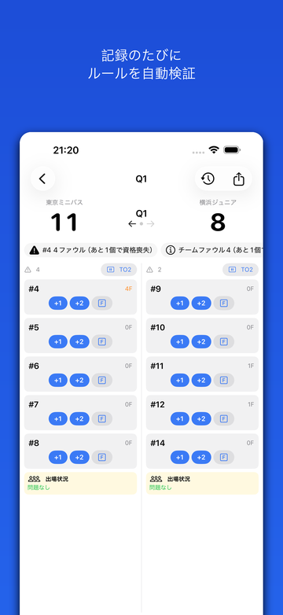
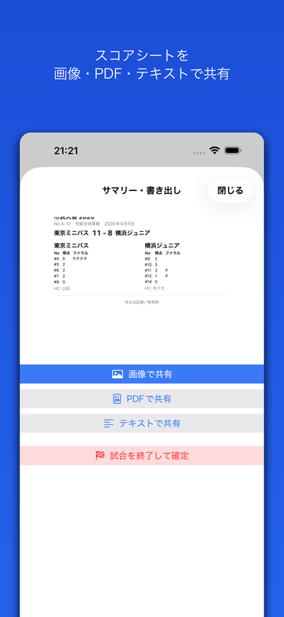
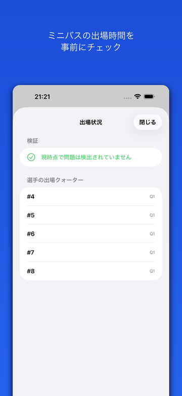

ミニバス対応のデジタルスコアシート。能動的なルール検証と出場時間検証で、
TO（テーブルオフィシャルズ）の「うっかり」を未然に防ぎます。
Features
| 対応OS | iOS 17.0 以降 |
|---|---|
| 価格 | 無料（アプリ内課金あり） |
| バージョン | 1.0 |
| サイズ | 約 1 MB |
| カテゴリ | スポーツ |
| 対象年齢 | 4+ |
| 対象ユーザー | ミニバス・バスケのTO／スコアラー |
| データの扱い | 完全オフライン・データ収集なし |
| 開発者 | freetokyo（YANGLI CHEN） |
| 最終更新 | 2026-06-09 |



記録・ルール検証・出場管理・書き出しを1つのアプリで。JBA競技規則に準拠。
記録するたびに決定論エンジンが判定。5ファウル・累積テクニカル・チームファウルペナルティ・コーチ失格などを、その場でアラート表示します。
RuleKit全員出場の充足見込みを事前にチェック。未出場の選手や必要な出場枠を前面に表示し、達成不能な状況を警告します。
ミニバス対応選手をタップして得点を選ぶだけ。ランニングスコアとクォーター別の色付けを自動更新。素早く正確に記録できます。
高速入力すべての記録は時系列ログに残り、いつでも取り消し・復活が可能。クォーターの取り違えも一括で補正できます。
追記型・論理削除スコアシート風のレイアウトで画像／PDF／テキストに書き出し。システム共有シートから配布できます（「非公式記録／参照用」）。
共有対応すべての処理は端末内で完結。ネットワーク送信もデータ収集も一切ありません。電波の届かない体育館でも安心して使えます。
データ収集なしPricing
主要機能はすべて無料。開発を応援したい方に買い切りの Pro をご用意。